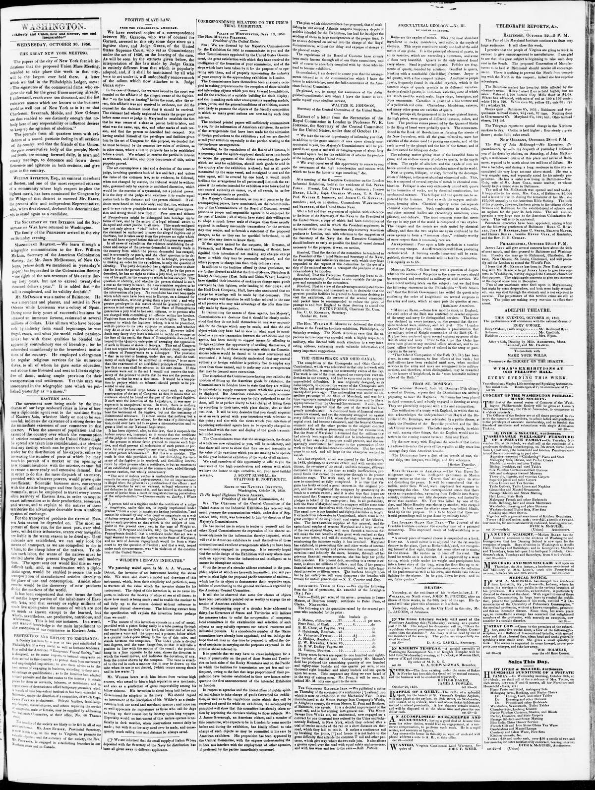

Domingo, was celebrated by a public dinner, at which the President
https://www.loc.gov/resource/sn83026172/1850-10-30/ed-1/?sp=3

See the original pageVer la página original
On holdEn espera
The summary we first wrote for this article did not match it closely enough, so we are not showing it. The passage found on the page is below, and the original page is one click away, until the article itself is ready.El primer resumen que escribimos para este artículo no coincidía lo bastante con su contenido, así que no lo mostramos. Abajo está el pasaje encontrado en la página, y la página original está a un clic, hasta que el artículo mismo esté listo.
Where this standsEn qué punto está
The full text of this article is still being prepared. Until it is ready, this page carries a summary, the passage found on the page, and the link to the original, which is always one click away.El texto completo de este artículo aún se está preparando. Hasta que esté listo, esta página lleva un resumen, el pasaje encontrado en la página y el enlace al original, que siempre está a un clic.
The passage this summary was written fromEl pasaje del que se escribió este resumen
The passage where this article was found, copied from the newspaper page itself, reading errors and all. This is exactly what the summary above is based on.El pasaje donde se encontró este artículo, copiado de la propia página del periódico, con sus errores de lectura y todo. Esto es exactamente aquello en lo que se basa el resumen de arriba.
arrived at Boston, re ports that the Dominicans are actively
preparing to meet the Haytiens.
Santanna has been placed
in chief command, and is busily engaged informing an army. I
They are plentifully supplied with arms and ammunition.
The ratification of a treaty with England, in which that na
tion acknowledges the independence from Hayti of the Re
public of St. Domingo, was celebrated by a public dinner, at
which the President of the Republic presided and the Bri
tish Consul was present.
The latter made a speech, in which
he said, among other things, that the English would not in
l terfere in the coming contest between them and Hayti.
By the new treaty with England the vessels of that nation
are allowed to enter the ports of the republic at fifty cents less
tonnage duty than .American vessels.
The Dominicans have a fleet of ten vessels of war, viz
one ship, two barques, two brigs, and five schooners.
[Host on Traveller.
More OUTRAGES IN ARKANSAS.—The Van Buren In
telligencer says
An intelligent
gentleman in Marion
county writes us that the Everett clan’ are again in arms
and disturbing the peace.
It will be remembered that the
militia, under Gen. Wood, were employed last summer in
suppressing this clan.
Our correspondent states that there
exists an organized clan, extending from Yellville into Searcy
county, numbering over fifty desperate men, and backed by
twice that number.
Mr. Tutt was killed by one of the
clan, and Major Hensley was shot at by another, who escaped
unhurt.
In both cases the attacks came from behind blinds,
fixed up for the purpose.
How to cite this articleCómo citar este artículo
Daily National Intelligencer. (1850). Washington City [D.C.], October 30, 185030 de octubre de 1850. DR in the American PressRD en la Prensa Norteamericana. Library of Congress, Chronicling America: https://www.loc.gov/resource/sn83026172/1850-10-30/ed-1/?sp=3
ReferencesReferencias
Library of Congress, Chronicling America: Daily National Intelligencer, October 30, 185030 de octubre de 1850.
Send an observationEnviar una observación
Does this article connect with your family, your town, or something you know? Did we get something wrong? Write to us. Observations go to the editor's inbox and are read by a person.¿Este artículo conecta con su familia, su pueblo o algo que usted conoce? ¿Nos equivocamos en algo? Escríbanos. Las observaciones llegan al buzón del editor y las lee una persona.
Send observationEnviar observación